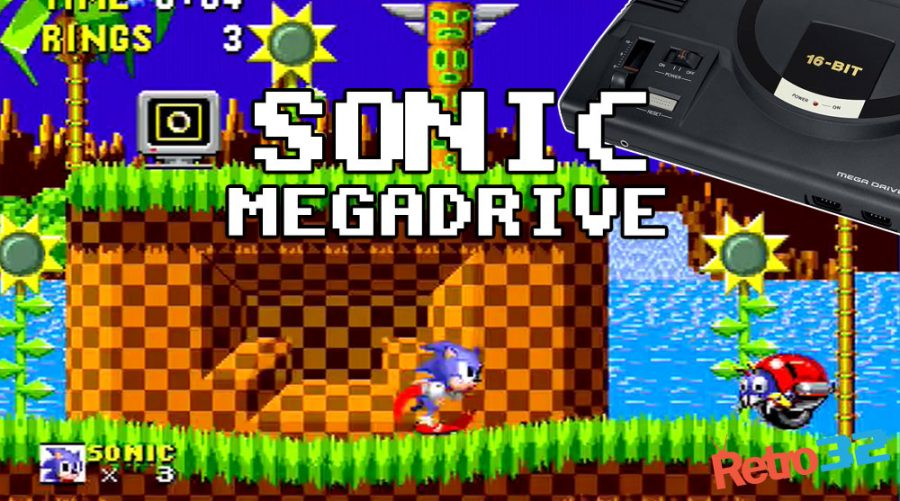
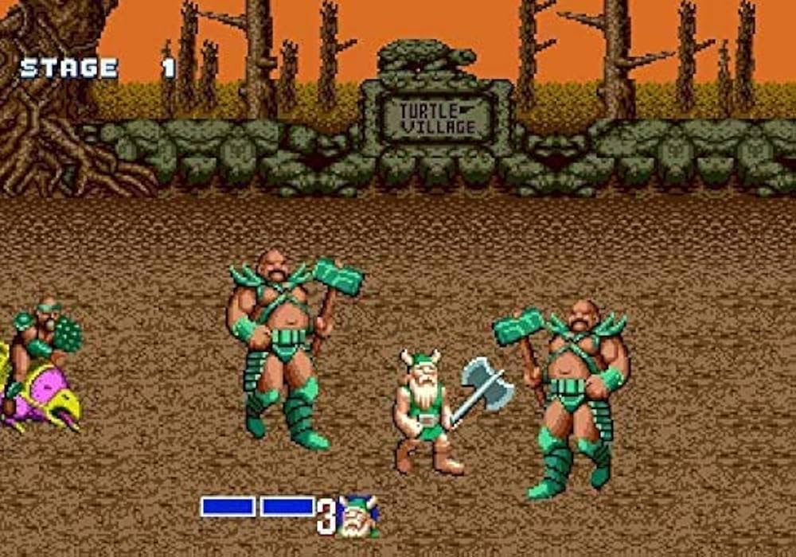
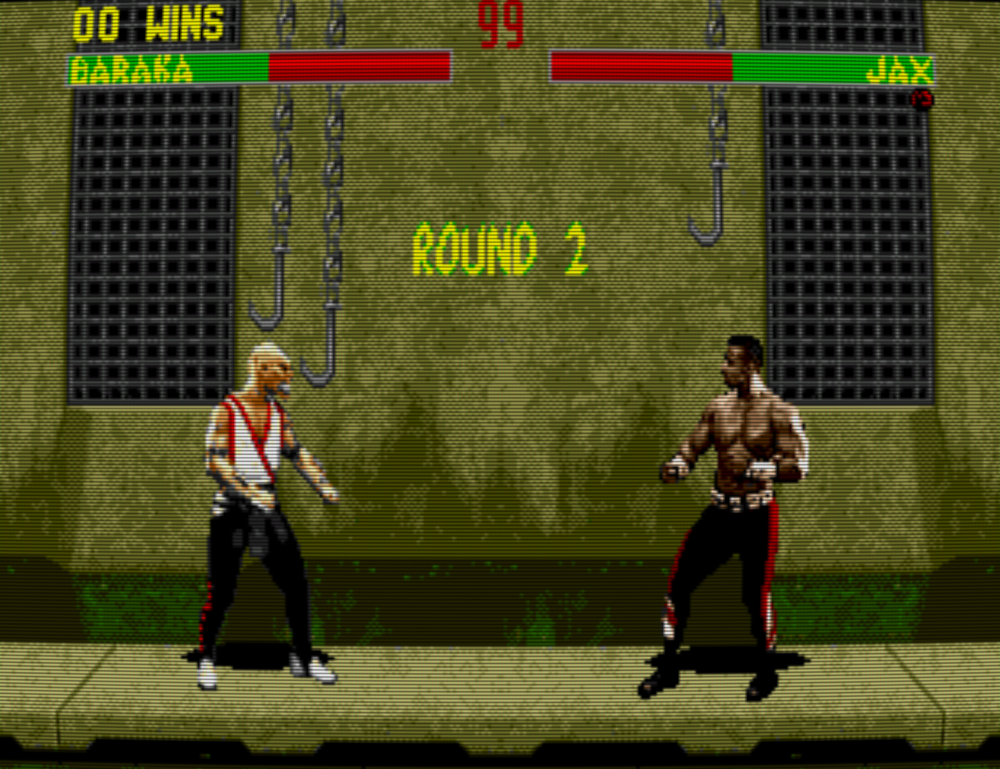

Mega Drive
Grande rival da Nintendo nos anos 90. O Mega Drive foi um dos consoles mais populares da era 16-bit, marcando gerações com gráficos avançados e jogos icônicos.
Veja um vídeo unboxing um Mega Drive"Sonic

Sonic the Hedgehog (1991) foi um jogo de plataforma lançado pela Sega para o Mega Drive/Genesis em 23 de junho de 1991. Criado pela Sonic Team para competir com a Nintendo, apresentou Sonic, um ouriço veloz com jogabilidade focada em rapidez, saltos giratórios e coleta de argolas. Na história, Sonic enfrenta Dr. Eggman, que busca dominar o mundo usando as Esmeraldas do Caos. O jogo consolidou Sonic como mascote da Sega.
Golden Axe

Golden Axe (1989) é um clássico beat 'em up desenvolvido pela Sega. A história se passa no mundo fantástico de Yuria, onde o vilão Death Adder sequestra o rei e sua filha, roubando o lendário Golden Axe para dominar o reino. O jogo ficou famoso pela ação, combate cooperativo e ambientação medieval.
Mortal Kombat

Mortal Kombat (1992) é um jogo de luta criado pela Midway. Apresenta um torneio onde guerreiros disputam o destino da Terra. Ficou conhecido pelos personagens marcantes e pelos golpes finais violentos chamados Fatalities. Foi um enorme sucesso e gerou diversas continuações e filmes.
Menu